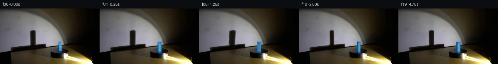

![首帧]()

Round 00
2026-11-05T02:55:34.378161+00:00像素候选变化代码 +296/−0inspection 更新
pixels e5d52f822abfd714 · code 0e10412de93953a9
查看本轮 generate.py 真实 diff
--- previous/generate.py
+++ current/generate.py
@@ -0,0 +1,296 @@
+#!/usr/bin/env python3
+"""Generate the 20-frame PixelWorld continuation using local pixel operations only."""
+
+from pathlib import Path
+import math
+
+import cv2
+import numpy as np
+from PIL import Image, ImageDraw, ImageFont
+
+import artifact_io
+
+
+ROOT = Path(__file__).resolve().parent
+W, H = 256, 144
+N = 20
+AA = 4
+
+
+def smoothstep(x):
+ x = np.clip(x, 0.0, 1.0)
+ return x * x * (3.0 - 2.0 * x)
+
+
+def antialiased_mask(points):
+ """Return a float alpha mask for a polygon, rasterized at 4x."""
+ canvas = Image.new("L", (W * AA, H * AA), 0)
+ pts = [(int(round(x * AA)), int(round(y * AA))) for x, y in points]
+ ImageDraw.Draw(canvas).polygon(pts, fill=255)
+ canvas = canvas.resize((W, H), Image.Resampling.LANCZOS)
+ return np.asarray(canvas, dtype=np.float32) / 255.0
+
+
+def antialiased_line_mask(points, width=0.65):
+ canvas = Image.new("L", (W * AA, H * AA), 0)
+ pts = [(int(round(x * AA)), int(round(y * AA))) for x, y in points]
+ ImageDraw.Draw(canvas).line(pts, fill=255, width=max(1, int(round(width * AA))), joint="curve")
+ canvas = canvas.resize((W, H), Image.Resampling.LANCZOS)
+ return np.asarray(canvas, dtype=np.float32) / 255.0
+
+
+def composite(frame, color, alpha):
+ """Alpha composite either a flat RGB or an HxWx3 RGB array."""
+ a = np.clip(alpha, 0.0, 1.0)[..., None]
+ c = np.asarray(color, dtype=np.float32)
+ frame[:] = frame * (1.0 - a) + c * a
+
+
+def build_shadow_layer(source):
+ """Separate the source wall shadow into a clean plate and attenuation map.
+
+ The lit wall behind the shadow is estimated per row from the unoccluded wall
+ on both sides. A scalar attenuation map preserves the source penumbra and
+ photographic texture; transforming that map changes shadow width/skew.
+ """
+ src = source.astype(np.float32)
+ lum = src @ np.array([0.2126, 0.7152, 0.0722], dtype=np.float32)
+ fitted = np.zeros((H, W), dtype=np.float32)
+ xx = np.arange(W, dtype=np.float32)
+
+ # The shadow lies in x=74..96, y=54..95. Fit only nearby exposed wall.
+ for y in range(50, 97):
+ if y <= 92:
+ samples = np.r_[np.arange(48, 73), np.arange(99, 124)]
+ degree = 2
+ else:
+ # At the wall/platform boundary a linear local bridge is safer.
+ samples = np.r_[np.arange(63, 73), np.arange(99, 109)]
+ degree = 1
+ coef = np.polyfit(samples, lum[y, samples], degree)
+ fitted[y] = np.polyval(coef, xx)
+
+ attenuation = np.ones((H, W), dtype=np.float32)
+ roi = np.zeros((H, W), dtype=bool)
+ roi[51:97, 70:101] = True
+ valid = roi & (fitted > 12.0)
+ ratio = np.ones_like(lum)
+ ratio[valid] = lum[valid] / fitted[valid]
+
+ # Keep only genuine darkening. A gentle spatial gate protects neighboring
+ # wall gradients from accidental classification as shadow.
+ yy_grid, xx_grid = np.mgrid[0:H, 0:W]
+ gate_x = smoothstep((xx_grid - 69.0) / 8.0) * smoothstep((102.0 - xx_grid) / 8.0)
+ gate_y = smoothstep((yy_grid - 50.0) / 8.0) * smoothstep((98.0 - yy_grid) / 8.0)
+ raw = np.clip(ratio, 0.055, 1.0)
+ shadow_amount = np.clip((1.0 - raw) * gate_x * gate_y, 0.0, 0.95)
+ attenuation = 1.0 - shadow_amount
… diff truncated; 209 more lines …